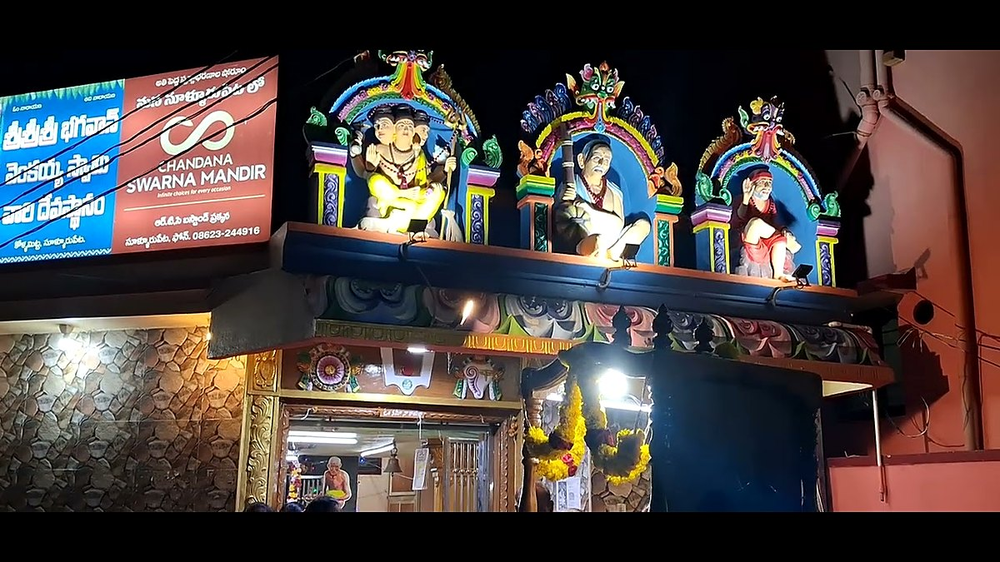
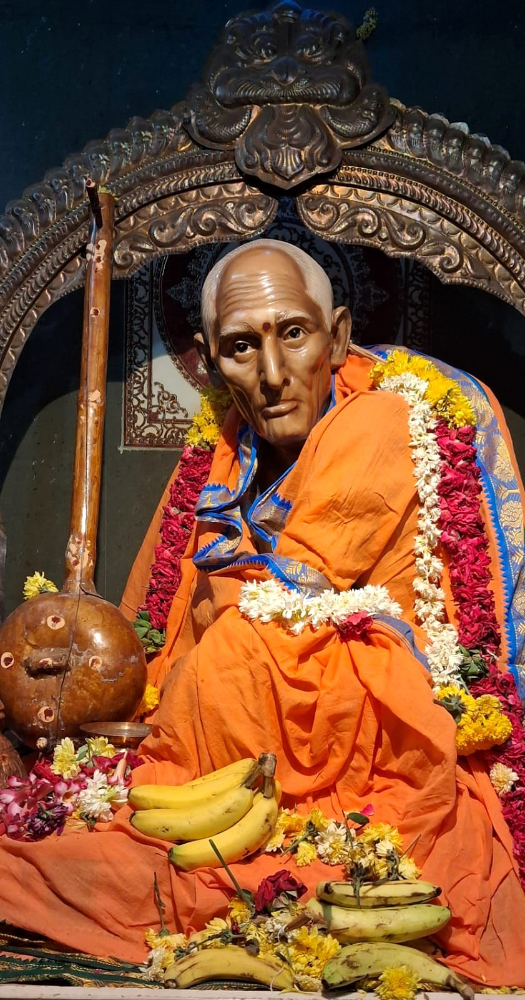
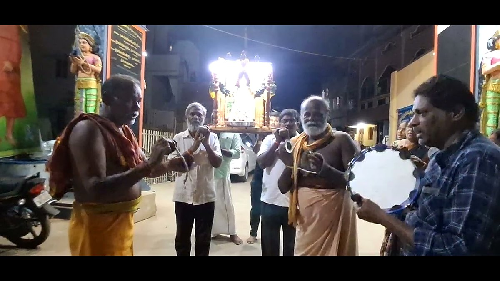

Sri Venkaiah Swamy Temple, Sullurupetaశ్రీ వెంకయ్య స్వామి ఆలయం, సూళ్లూరుపేట





TODO: the timings and pooja schedule below are sample values. Replace them with the temple's actual details.
Darshan timingsదర్శన సమయాలు
| Dayరోజు | Morningఉదయం | Eveningసాయంత్రం |
|---|---|---|
| Every dayప్రతిరోజూ | 6:00 AM – 12:00 PM | 4:00 PM – 8:00 PM |
| Saturdays & festivalsశనివారాలు, పండుగలు | 5:30 AM – 1:00 PM | 4:00 PM – 9:00 PM |
Daily poojasనిత్య పూజలు
| Timeసమయం | Poojaపూజ |
|---|---|
| 6:00 AM | Suprabhatam, Abhishekamసుప్రభాతం, అభిషేకం |
| 8:00 AM | Archana, Harathiఅర్చన, హారతి |
| 12:00 PM | Maha Naivedyam, Annadanamమహా నైవేద్యం, అన్నదానం |
| 6:30 PM | Bhajans, Sayankala Harathiభజనలు, సాయంకాల హారతి |
Festivalsఉత్సవాలు
| Festivalఉత్సవం | Whenఎప్పుడు |
|---|---|
| Aradhana Mahotsavam (Swamy's mahasamadhi day)ఆరాధన మహోత్సవం (స్వామి మహాసమాధి దినం) | 18 – 24 Augustఆగస్టు 18 – 24 |
| Guru Pournamiగురు పౌర్ణమి | Ashadha full moon (July)ఆషాఢ పౌర్ణమి (జూలై) |
| Datta Jayantiదత్త జయంతి | Margashira full moon (December)మార్గశిర పౌర్ణమి (డిసెంబర్) |
| Temple anniversaryఆలయ వార్షికోత్సవం | TODO date |
Address & how to reachచిరునామా, ఎలా చేరుకోవాలి
Sri Venkaiah Swamy Templeశ్రీ వెంకయ్య స్వామి ఆలయం
Bhagavan Sri Venkaiah Swamy Dhyana Mandiram,
Kollamitta, Sullurupeta,
Tirupati District, Andhra Pradesh 524121, India
భగవాన్ శ్రీ వెంకయ్య స్వామి ధ్యాన మందిరం,
కొల్లమిట్ట, సూళ్లూరుపేట,
తిరుపతి జిల్లా, ఆంధ్రప్రదేశ్ 524121
Open in Google Mapsగూగుల్ మ్యాప్స్లో చూడండి
By trainరైలు ద్వారా
Sullurupeta railway station (SPE) is on the Chennai – Gudur line. Chennai suburban and express trains stop here. The temple is a short auto ride from the station. సూళ్లూరుపేట రైల్వే స్టేషన్ (SPE) చెన్నై – గూడూరు మార్గంలో ఉంది. చెన్నై సబర్బన్, ఎక్స్ప్రెస్ రైళ్లు ఇక్కడ ఆగుతాయి. స్టేషన్ నుంచి ఆలయానికి ఆటోలో కొద్ది దూరం.
By roadరోడ్డు ద్వారా
The temple is at Kollamitta, just off NH16 on the northern edge of Sullurupeta. APSRTC and TNSTC buses between Chennai, Nellore and Tirupati stop at Sullurupeta bus stand, about 3 km away. ఆలయం సూళ్లూరుపేట ఉత్తర అంచున NH16 పక్కనే కొల్లమిట్టలో ఉంది. చెన్నై, నెల్లూరు, తిరుపతి మధ్య నడిచే APSRTC, TNSTC బస్సులు సుమారు 3 కి.మీ. దూరంలోని సూళ్లూరుపేట బస్టాండ్లో ఆగుతాయి.
| Fromఎక్కడి నుండి | Routeమార్గం | Distanceదూరం | |
|---|---|---|---|
| Chennaiచెన్నై | NH16 north via Red Hills, Gummidipoondi and Tadaరెడ్ హిల్స్, గుమ్మిడిపూండి, తడ మీదుగా NH16 ఉత్తరం | ~85 km, 2 h | Directionsదారి |
| Nelloreనెల్లూరు | NH16 south via Naidupetaనాయుడుపేట మీదుగా NH16 దక్షిణం | ~95 km, 2 h | Directionsదారి |
| Tirupatiతిరుపతి | Via Srikalahasti and Naidupeta, then NH16 southశ్రీకాళహస్తి, నాయుడుపేట మీదుగా, తర్వాత NH16 దక్షిణం | ~80 km, 2 h | Directionsదారి |
| Hyderabadహైదరాబాద్ | NH65 to Vijayawada, then NH16 south via Ongole and Nellore; or NH44 via Kurnool and Kadapa to TirupatiNH65 లో విజయవాడ, తర్వాత ఒంగోలు, నెల్లూరు మీదుగా NH16 దక్షిణం; లేదా కర్నూలు, కడప మీదుగా NH44 లో తిరుపతి | ~545 km, 9–10 h | Directionsదారి |
Times are approximate for normal traffic. Tap Directions for live navigation from your location.సమయాలు సాధారణ ట్రాఫిక్కు అంచనా. మీ ప్రదేశం నుండి ప్రత్యక్ష నావిగేషన్ కోసం "దారి" నొక్కండి.
Navigate from my locationనా ప్రదేశం నుండి నావిగేట్ చేయండి
By airవిమానం ద్వారా
Chennai International Airport (about 95 km) and Tirupati Airport (about 90 km) are the nearest airports. చెన్నై అంతర్జాతీయ విమానాశ్రయం (సుమారు 95 కి.మీ.), తిరుపతి విమానాశ్రయం (సుమారు 90 కి.మీ.) సమీప విమానాశ్రయాలు.
Accommodation & annadanamవసతి, అన్నదానం
Free annadanam (meals) is served to all devotees after the noon pooja. For group visits or overnight stay, please call the temple office in advance. మధ్యాహ్న పూజ అనంతరం భక్తులందరికీ ఉచిత అన్నదానం జరుగుతుంది. బృంద సందర్శనలకు, రాత్రి బసకు ముందుగా ఆలయ కార్యాలయానికి ఫోన్ చేయండి.
Temple office:ఆలయ కార్యాలయం: +91 93900 17190